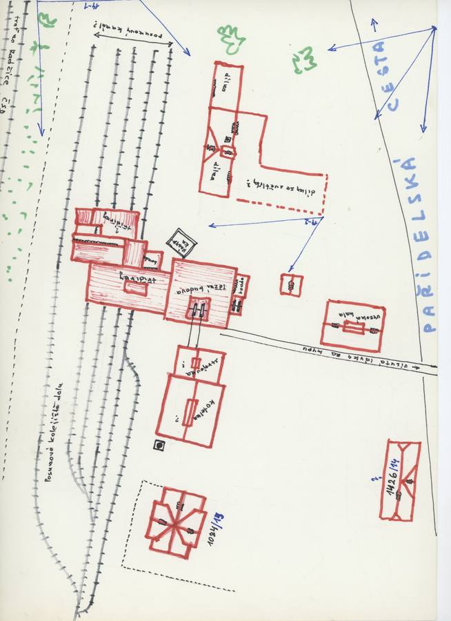
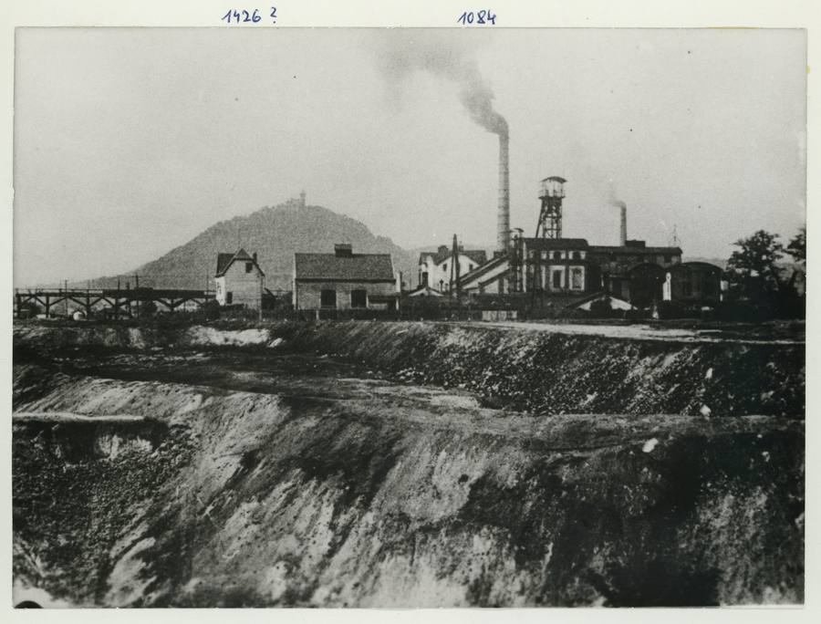
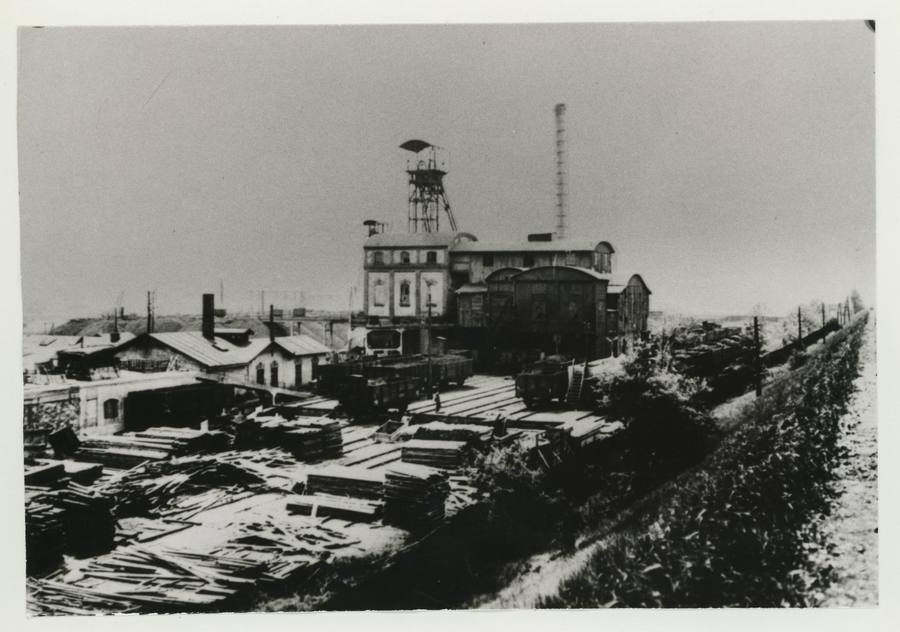
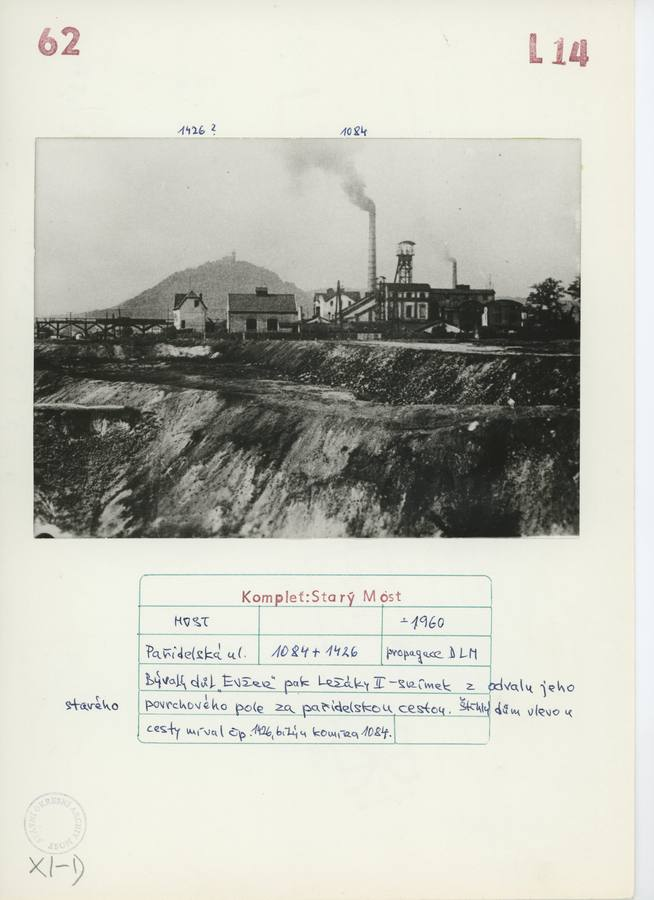
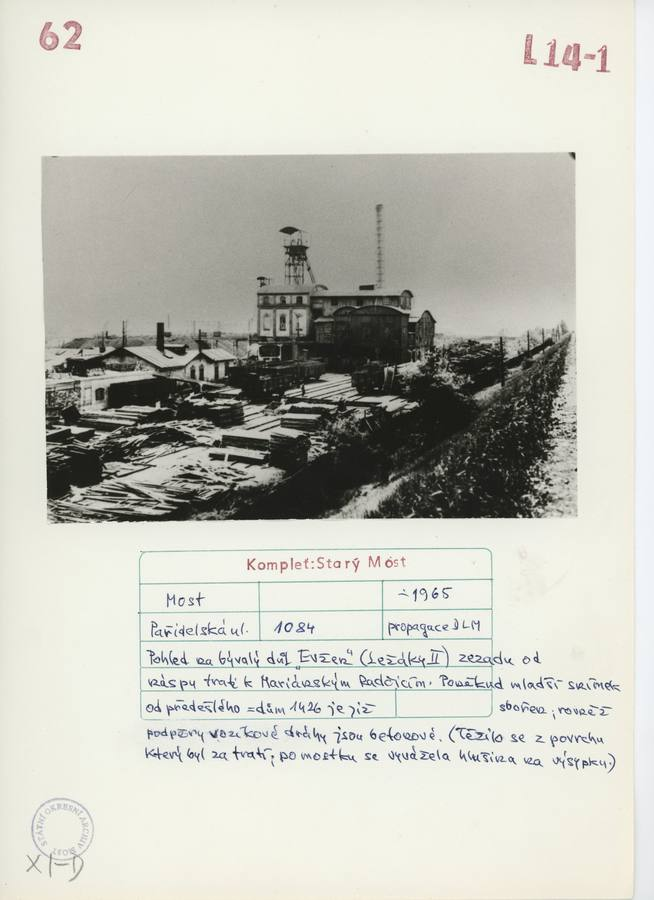
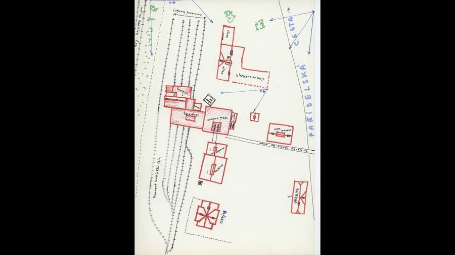
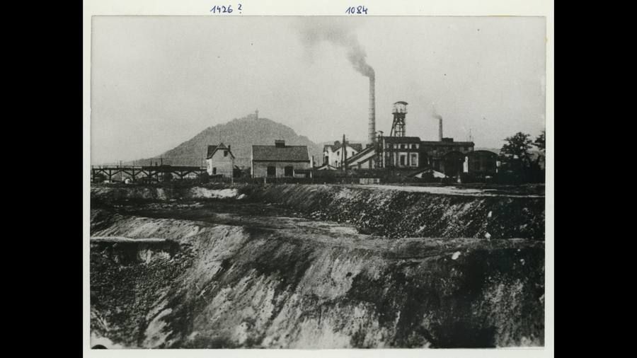
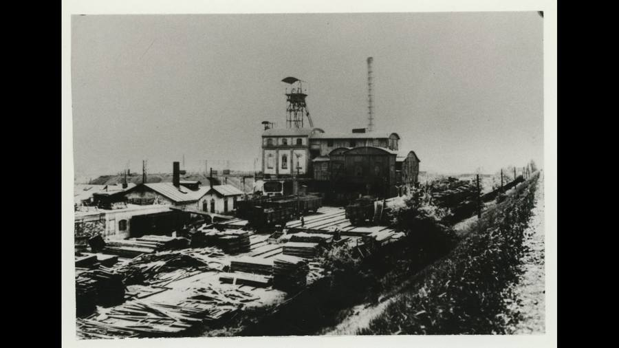
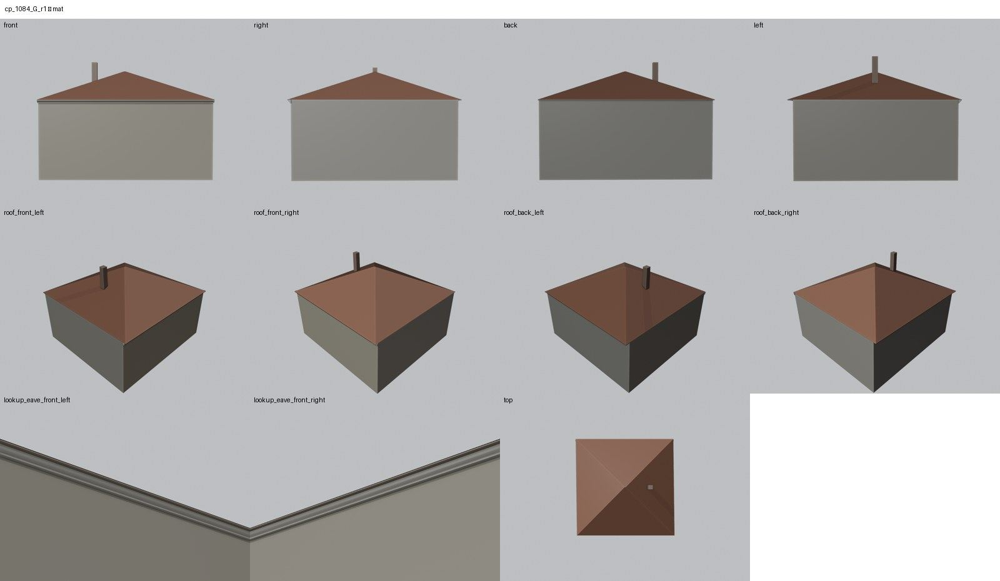
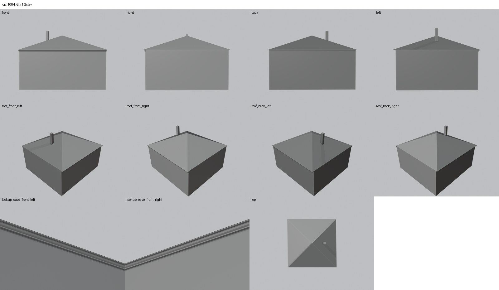

Identita domu
Upozornění – hypotéza: Objemová hypotéza: půdorys z GIS, podlaží a střecha odhadnuté podle vzdálených snímků dolu Evžen (~1960, ~1965); fasády nejsou doloženy, proto jsou bez otvorů.
Budova GIS 2071 (15,1 × 14,3 m) na severozápadní straně silnice v areálu bývalého dolu Evžen, později Ležáky II. Karty Komplet Starý Most ke snímkům z odvalu (~1960) a z náspu trati k Mariánským Radčicím (~1965) uvádějí: „štíhlý dům vlevo u cesty míval čp. 1426, bližší komína 1084“ a „dům 1426 je již zbořen“. Snímky ukazují areál dolu z dálky, fasády nejsou čitelné.
Použité prameny: dvě fotografie dolu (~1960, ~1965) s kartami Komplet Starý Most, náčrt situace areálu, GIS půdorys 2071.
Přílohy v databázi (8)
Všechny přílohy struktury 1084 v databázi Libuše, načtené živě 3. 11. 2026 jen pro čtení a otevřené. Kliknutím otevřete větší náhled.


plán / výkres
SHA-256 dd39ff6ea2d2…


fotografie
SHA-256 36fedead7320…


fotografie
SHA-256 9610e0bb68a1…


archivní karta
SHA-256 815f4eb80e28…


archivní karta
SHA-256 14b2b9c30da8…


odvozenina bez tagu (kolorovaná / výřez / FRONT)
SHA-256 35d1fe06cc3e…


odvozenina bez tagu (kolorovaná / výřez / FRONT)
SHA-256 b30ce1c46890…


odvozenina bez tagu (kolorovaná / výřez / FRONT)
SHA-256 eb92820f9a45…
Geometrie
| Revize geometrie | r1 |
|---|---|
| Úsek ulice | SZ · severozápadní strana (u hřiště) |
| Poloha | GIS budova 2071, popisek 1084, ulice Pařidelská |
| Šířka průčelí | 15,14 m |
| Výška okapu | 7,00 m (odhad) |
| Podlaží | 2 (odhad) |
| Střecha podle pramenů | valbová podle siluety na snímku (odhad) |
| Otvory / vikýře v modelu | 0 / 0 |
| Polygonů | 69 |
Kontrolní pohledy




Kontrola modelu
| Brána geometrie (automaticky) | v pořádku |
|---|---|
| Uzavřené podkroví (GLB) | v pořádku: zásahy paprsků 0, nekryté zdivo 0,00 m², střecha nad prázdnem 0,00 m² |
| UV mapování | v pořádku: 0 zkolabovaných ploch z 69 |
| Síť | v pořádku |
| Počty otvorů proti pramenu | souhlasí |
| Vizuální kontrola | prošla (Claude (Fable 5.1), 2026-11-05) |
| Kontrola střechy | prošla |
- hlavní průčelí (do ulice): bez pramene fasády – otvory nemodelovány (objemová hypotéza) (souhlasí)
Textury
bez textur (hypotéza – jen prosté materiály)
Až Codex dodá texturovaný model, objeví se v prohlížeči nahoře volba Textury (Codex).
Hypotézy
Upozornění – hypotéza: Objemová hypotéza: půdorys z GIS, podlaží a střecha odhadnuté podle vzdálených snímků dolu Evžen (~1960, ~1965); fasády nejsou doloženy, proto jsou bez otvorů.
Vše níže je model_hypothesis, provisional, locked: false.
- celý dům je objemová hypotéza: půdorys z GIS, dvě podlaží a valbová střecha odhadnuté podle vzdálených snímků; bez oken a dveří
- ztotožnění čísla 1084 s budovou GIS 2071 předpokládá, že plán 1938 označuje tutéž stavbu jako karta
Technický zápis hypotéz v plánu modelu (revize r1, bez diakritiky)
- celý dům je objemová hypotéza: půdorys GIS, 2 podlaží a valbová střecha podle vzdálených snímků dolu (~1960, ~1965), bez oken a dveří
- identita: karta přiřazuje číslo 1084 stavbě „bližší komína“ v areálu dolu Evžen; GIS 1938 má u Pařidelské jedinou budovu s čp. 1084 (2071) – shoda předpokládána
- sousední dům 1426 (štíhlý, u cesty, zbořen před 1965) nemá půdorys v GIS – není modelován (blocked)
Historie revizí modelu
- r1 3.11.2026: objemová hypotéza podle GIS a vzdálených snímků dolu
Soubory
- Geometrie čp. 1084, GLB (revize r1)
- Pracovní model: F:\MOST\output\paridelska_street_claude_2026-10-29\houses\cp1084\r1\cp_1084_G_r1.blend
- Plán modelu: F:\MOST\output\paridelska_street_claude_2026-10-29\houses\cp1084\geometry_plan.json